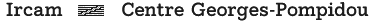

|  |
|
You can download the beta-release of jMax at: ftp://ftp.ircam.fr/pub/IRCAM/equipes/temps-reel/jmax/releases/beta/ Current beta-release number is release 2.3.12. After download, please sending us a brief email, telling us that you have downloaded jMax, describing what you plan to use it for, what machines you are using, etc.
This first beta-test version is for SGI platforms. |